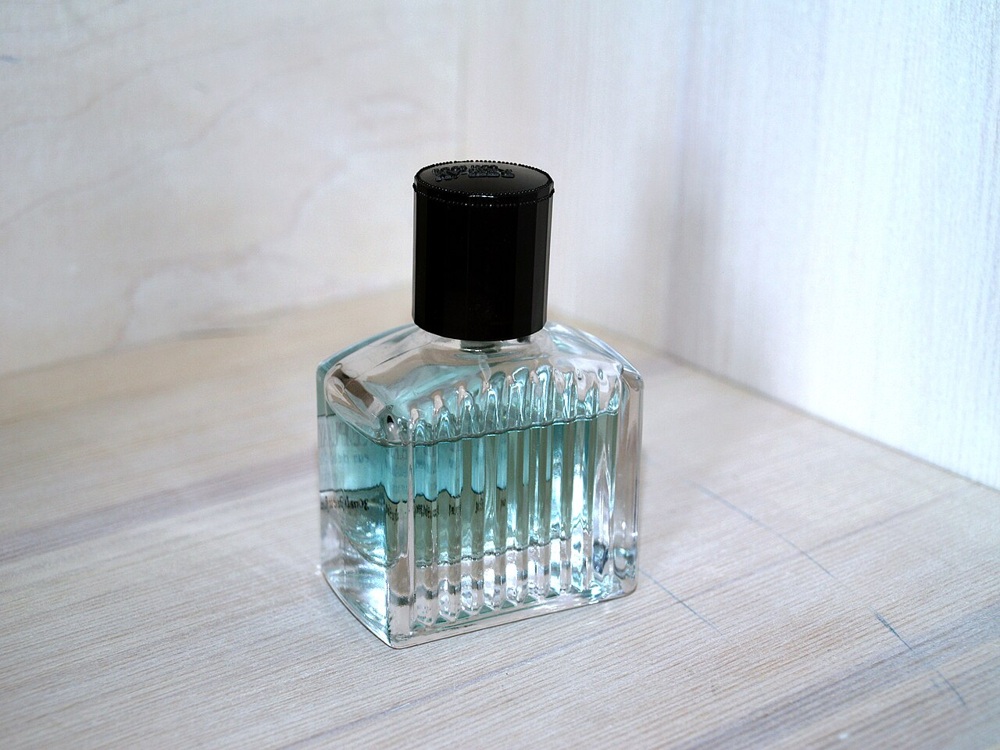
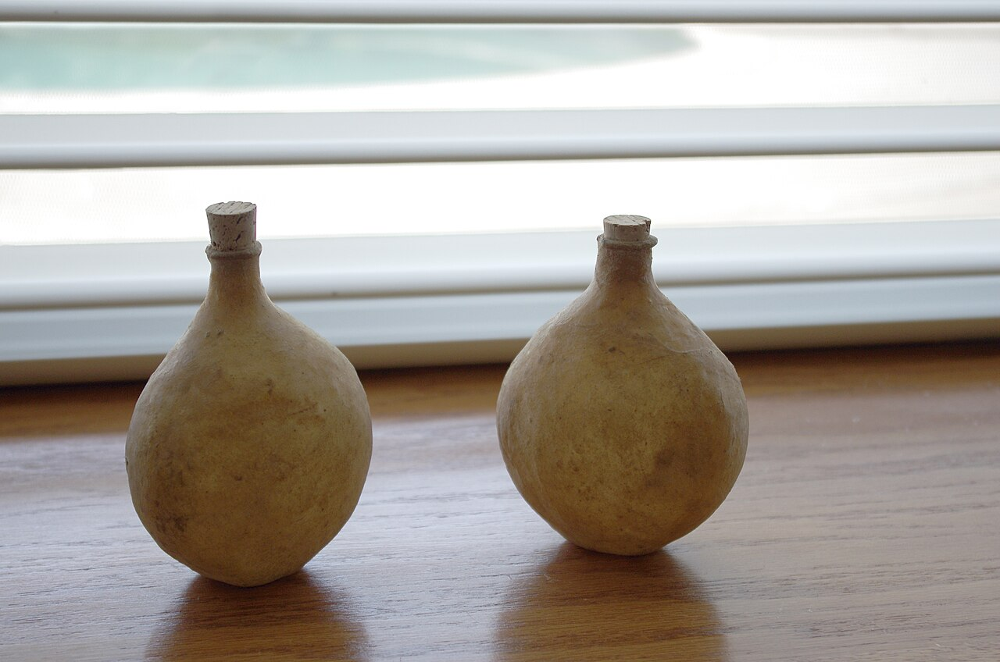

Fragancias

Fragancias
Un perfume es una mezcla de sustancias volátiles cuya composición en fase vapor cambia con el tiempo. Esta sección relaciona volatilidad con percepción, presenta el cálculo de diluciones y resume los límites de seguridad.
Objetivos de aprendizaje
- Explicar el orden de las notas a partir de la presión de vapor.
- Construir un acorde con registro cuantitativo y control de variables.
- Calcular la concentración de un componente en el producto final.
- Aplicar la regla de suma para furocumarinas y los umbrales de etiquetado.
Vocabulario
Notas de salida
Componentes más volátiles de una fragancia, percibidos primero. Cítricos.
Notas de corazón
Componentes de volatilidad intermedia. Florales.
Notas de fondo
Componentes menos volátiles, de mayor persistencia. Maderas, vainilla.
Acorde
Mezcla de materiales percibida como un olor unitario.
Fijador
Material de baja volatilidad que reduce la presión de vapor de los demás.
Presión de vapor
Presión del vapor en equilibrio con su líquido o sólido a una temperatura dada. Limoneno 1.55 mmHg; vainillina 0.000118.
Alérgeno
Sustancia capaz de inducir sensibilización. Las listadas se declaran en la etiqueta. Linalool.
Fototóxico
Que causa daño cutáneo al combinarse con radiación ultravioleta. Bergamota exprimida.
IFRA
Asociación internacional que publica estándares de uso para materiales de fragancia.
Maceración
Reposo de una solución alcohólica hasta que su olor se estabiliza.
Lección 1. Volatilidad
La velocidad de evaporación de un componente en una mezcla ideal es proporcional a su fracción molar y a su presión de vapor (ley de Raoult):
\[p_i = x_i\, p_i^{*}\]
Los componentes con mayor \(p_i^{*}\) dominan el vapor al principio y se agotan antes. De ahí la clasificación en notas de salida, corazón y fondo.
Tres sustancias recién aplicadas: limoneno, linalool y vainillina.
A tres vidas medias del limoneno queda 12.5 % de él y cerca de 81 % del linalool.
A veinticinco, el limoneno se agotó, del linalool queda cerca de 17 % y la vainillina casi no cambia. Laboratorio virtual: notas de un perfume.
El modelo toma cada sustancia por separado, con cinética de primer orden y constante proporcional a la presión de vapor (PubChem 2026). No da horas. En una mezcla real intervienen la piel, el disolvente y las interacciones entre componentes.
Lección 2. Construcción de un acorde
- Elegir un material de salida, uno de corazón y uno de fondo.
- Pesar en gramos. El volumen de una gota cambia con la viscosidad y con el gotero.
- Evaluar en tira de papel a 0, 15 min, 1 h y 4 h, con códigos que oculten la identidad de la mezcla.
- Cambiar una proporción por vez y conservar un testigo.
Evaluación sensorial. Con tres o más evaluadores, el orden de presentación se asigna al azar. Una prueba triangular decide si dos versiones se distinguen: con 18 evaluadores hacen falta 10 aciertos para una significancia de 5 %.
Ejemplo resuelto. Un acorde de 10 g con 40 % de naranja lleva 4.00 g. Diluido al 12 % en un perfume, la naranja queda en 0.40 × 12 = 4.8 %.
Lección 3. Concentración y solubilidad
| Producto | Fragancia (%) | Alcohol (°) |
|---|---|---|
| Agua de colonia | 3 a 5 | 60 a 80 |
| Agua de toilette | 5 a 10 | 80 a 90 |
| Agua de perfume | 10 a 15 | 85 a 96 |
| Perfume | 15 a 20 | 96 |
| Extracto | más de 20 | 96 |
Son convenciones del oficio (EDUCC, s. f.); la ley no las define y las fuentes difieren. Al agregar agua, los componentes hidrófobos superan su solubilidad y la mezcla se enturbia. El punto de turbidez se determina titulando la solución alcohólica con agua a temperatura fija.
Lección 4. Seguridad
Fototoxicidad
Las furocumarinas de los aceites cítricos exprimidos o prensados en frío reaccionan con la radiación UVA. Límites de IFRA para productos sin enjuague (IFRA 2023):
| Aceite | Límite (%) |
|---|---|
| Bergamota exprimida | 0.40 |
| Lima exprimida | 0.70 |
| Naranja amarga, cáscara exprimida | 1.25 |
| Limón prensado en frío | 2.0 |
| Toronja exprimida | 4.0 |
Los destilados casi no contienen furocumarinas y no siguen estos valores. Si se combinan varios exprimidos:
\[\sum_i \frac{c_i}{L_i} \times 100 \le 100\]
Ejemplo resuelto. 0.20 % de bergamota consume 0.20/0.40 = 50 %. 1.0 % de limón consume 1.0/2.0 = 50 %. La suma llega a 100 %.
Sensibilización
El aire oxida limoneno y linalool a hidroperóxidos sensibilizantes. En 2900 pacientes del Reino Unido, 5.2 % reaccionó al limoneno oxidado y 6.9 % al linalool oxidado (Audrain et al. 2014). Los materiales se guardan en envase lleno, frío y oscuro, con fecha de apertura.
Etiquetado
El Reglamento (UE) 2023/1545 exige declarar los alérgenos listados por encima de 0.001 % sin enjuague o 0.01 % con enjuague, y rige desde el 31-07-2026 para productos nuevos en el mercado (Comisión Europea 2023). El conteo directo del anexo da 81 entradas; el considerando habla de 80.
La concentración de un alérgeno en el producto suma los aportes de cada material:
\[c_a = \sum_j w_j\, f_{a,j}\]
con \(w_j\) el porcentaje del material \(j\) y \(f_{a,j}\) la fracción del alérgeno en él.

Lección 5. Certificado de conformidad
El proveedor emite un certificado IFRA para cada mezcla, con el máximo por categoría de producto y el número de enmienda. La categoría depende del producto final: una misma fragancia puede admitir 1 % en un champú y menos en una crema facial. El certificado no sustituye la evaluación de seguridad.
Alcance de la evidencia
La 52.ª enmienda de IFRA está anunciada para 2027 y puede cambiar los límites de furocumarinas. Los acordes y perfumes de esta sección son ejercicios.